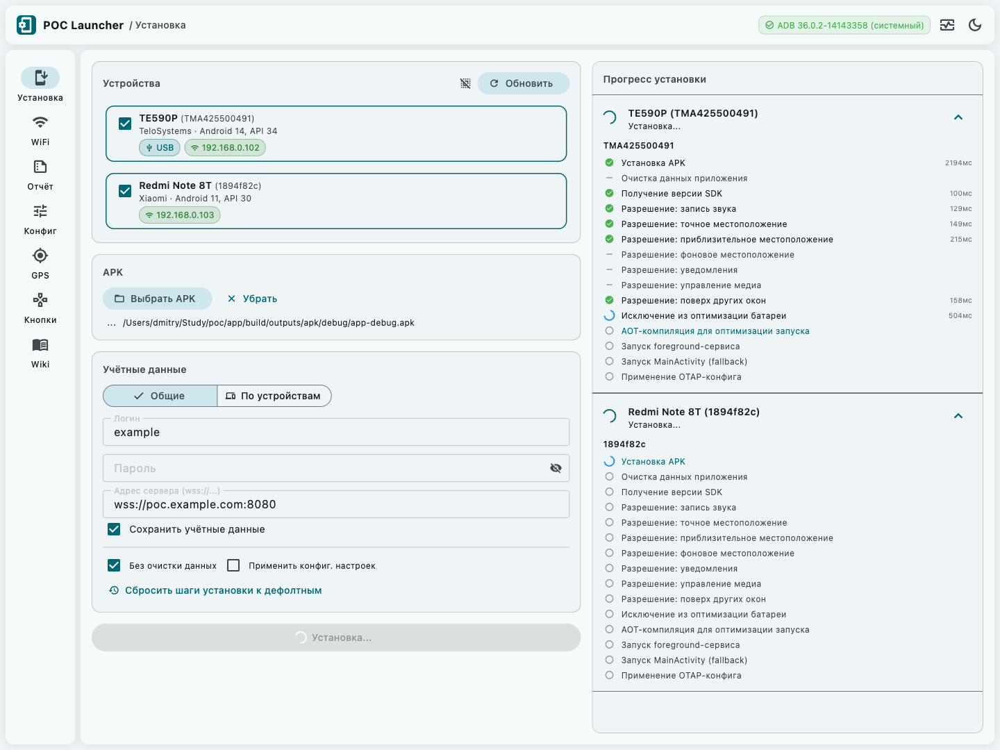
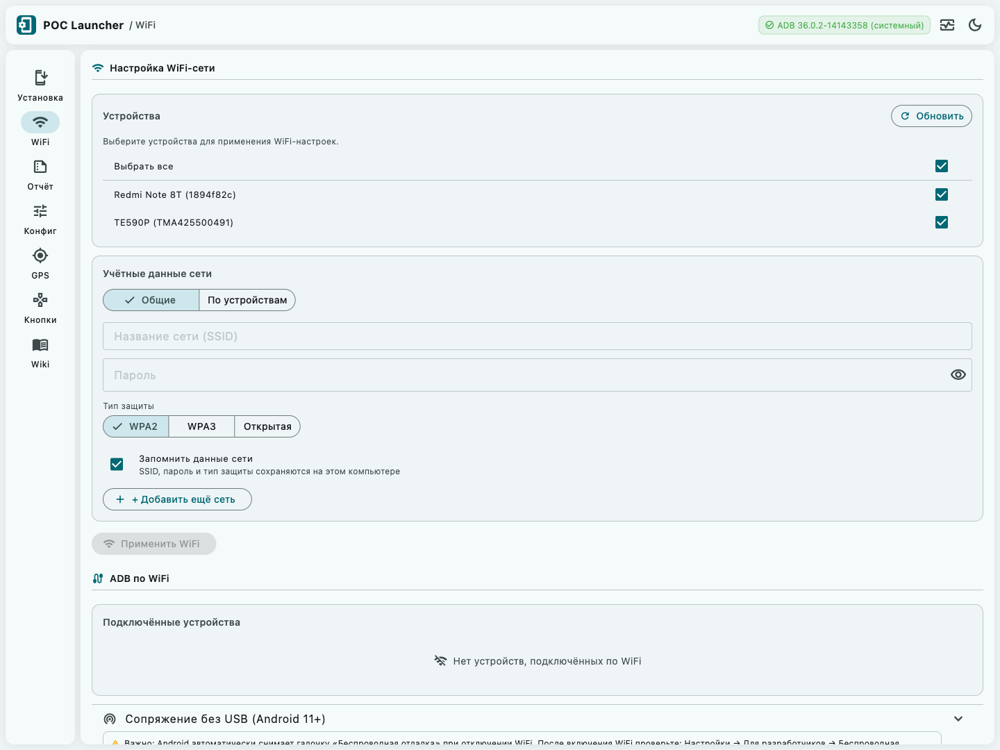
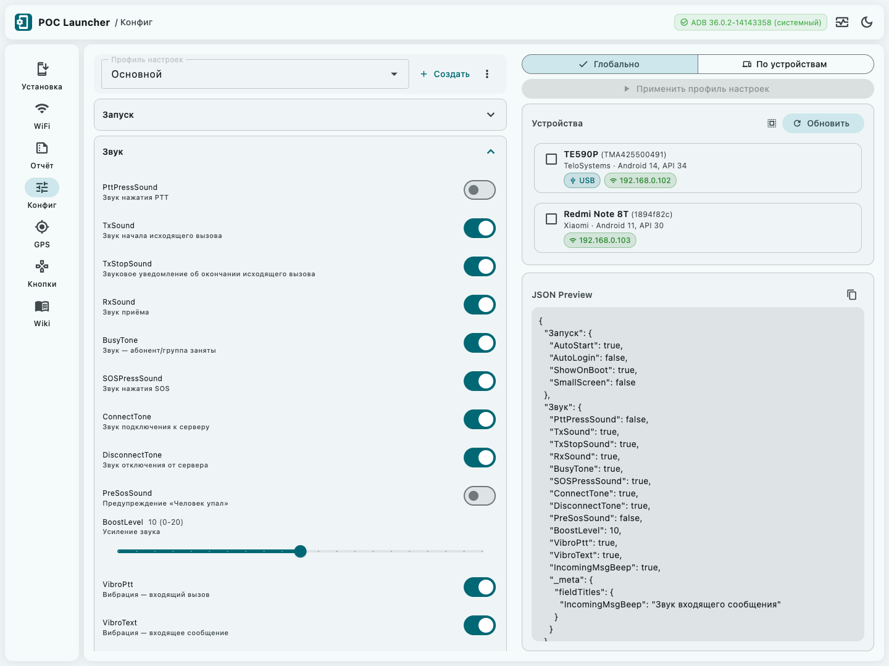
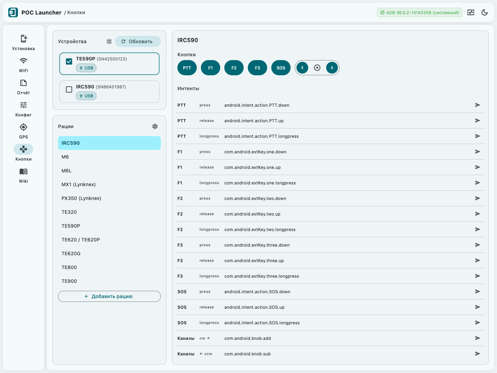
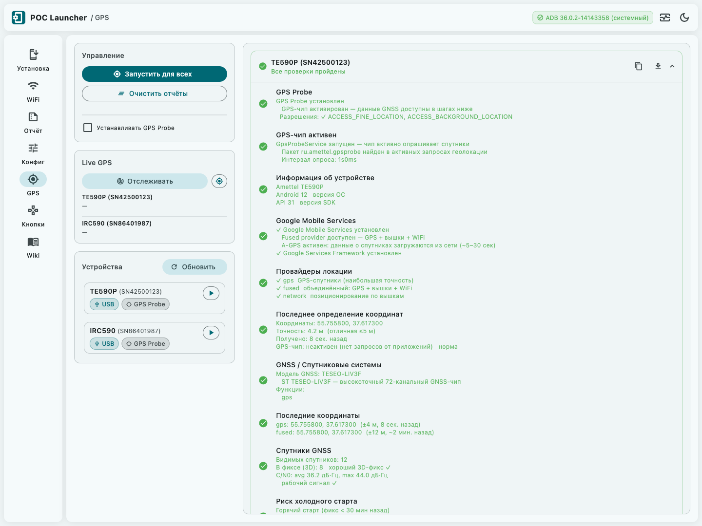
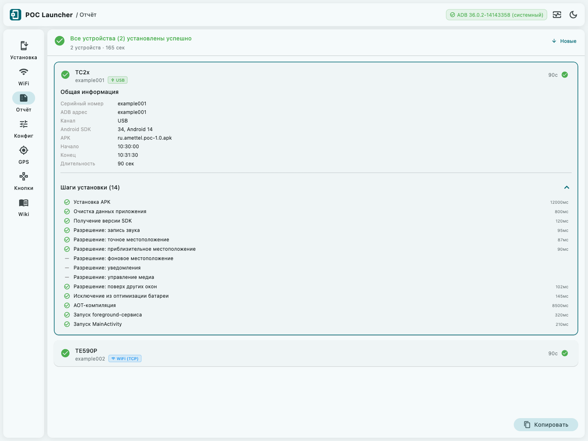

Всё необходимое — в одном приложении
Установка и настройка за один клик
Выберите APK, введите учётные данные один раз — для всех устройств или индивидуально для каждого. Нажмите «Установить»: приложение само установит APK, выдаст все необходимые разрешения, исключит из оптимизации батареи и запустит сервис.
- 15 шагов сценария выполняются автоматически
- Прогресс каждого шага виден в реальном времени
- Разные учётные данные для разных устройств в одном сеансе
- Групповая установка на несколько устройств параллельно

Настройка Wi-Fi через ADB
Для безэкранных устройств подключение к корпоративной сети Wi-Fi занимает секунды. Введите SSID и пароль — приложение настроит сеть на всех выбранных устройствах через ADB. Поддерживается и беспроводное сопряжение через QR-код (Android 11+).
- Настройка Wi-Fi без тачскрина на радиостанциях
- Общие или индивидуальные учётные данные
- Беспроводное сопряжение (ADB Wireless Pairing)

Визуальный редактор конфигурации
35+ параметров приложения — автозапуск, PTT-кнопки, геолокация, звук, уровни громкости — настраиваются через удобную форму. Конфиг сохраняется в файл и применяется без переустановки.
- Профили конфига для разных типов устройств
- Применение одной кнопкой без переустановки APK
- JSON-превью для продвинутых пользователей
- Режим «на каждое устройство» для индивидуальных настроек

Маппинг физических кнопок
Настройте привязку аппаратных кнопок (PTT, SOS, боковые клавиши) к действиям приложения прямо из интерфейса. Встроенные пресеты для 10+ популярных моделей. Отправьте команду и сразу проверьте реакцию — без перепрошивки.
- Пресеты для IRC590, M6, TE620, TE800, TE900 и других
- Создание кастомных маппингов с keycode
- Применение и тест без выхода из приложения

GPS-диагностика без команд ADB
Мгновенная проверка геолокации на выбранных устройствах: провайдеры, последний GPS-фикс, разрешения, Google Play Services, режим экономии батареи. Отчёт — в один клик, готов к отправке в поддержку.
- Одновременная диагностика нескольких устройств
- Понятный статус без знания ADB-команд
- Копирование отчёта в буфер или сохранение в файл
- Live-трекинг координат для полевой проверки

Отчёт и лог для каждого устройства
После завершения — сводная таблица: успешные и проблемные устройства,
детали по каждому шагу. Лог каждой сессии автоматически сохраняется в TXT
с именем вида install_2026-08-28_Device123.txt.
- Раскрываемые карточки с деталями по устройству
- Копирование отчёта одной кнопкой
- Автосохранение в папку загрузок
- Быстрый переход к папке с логами

Управление и настройки
В правом углу шапки — центр управления: индикатор ADB отображает статус в реальном времени. При ошибке достаточно кликнуть на него и скачать ADB прямо из приложения (~10 МБ с серверов Google) без выхода в терминал. Рядом — меню логов и переключатель темы.
- Индикатор ADB: готов, инициализация, устарел, ошибка
- Автозагрузка ADB одной кнопкой — не нужно устанавливать вручную
- Лог сессии: сохранение в TXT и полноэкранный просмотрщик
- Тёмная и светлая тема — выбор сохраняется между запусками